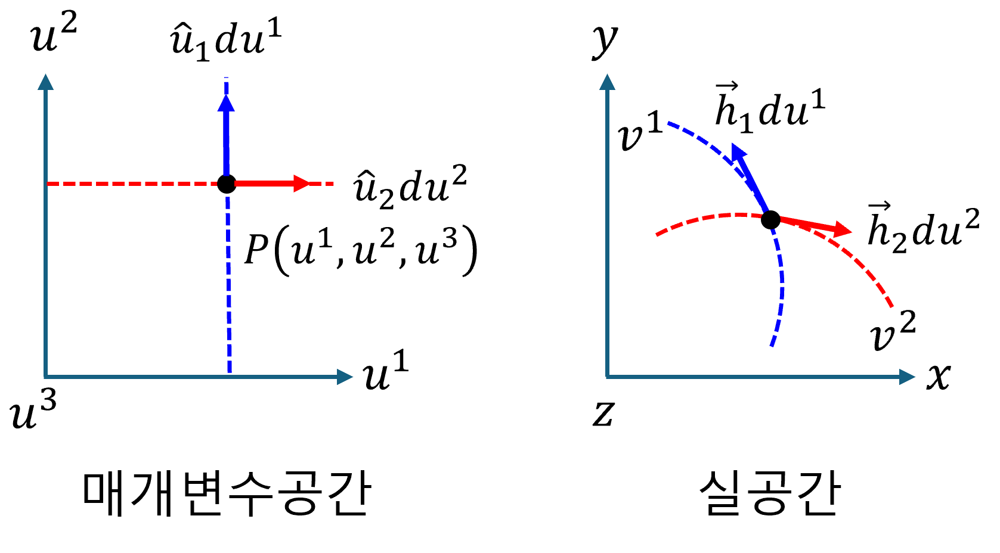

(a) Covariant and contravariant
이 챕터는 일반 좌표계에서 벡터를 표현하는 새로운 방식을 소개한다. Orthogonal coordinates 에 대한 기본적인 이해가 있다면 학습에 도움이 될 것이다
1. 일반좌표계에서의 표기법
일반 좌표계에서 벡터의 “좌표값"은 벡터를 해당 좌표축 벡터의 방향으로 평행하게 분해했을 때의 각 축에 대한 스케일링 계수 이다.
직교좌표계의 경우, 좌표축 벡터의 방향으로 평행하게 분해하는 것이 좌표축에 수선의 발을 내리는 것과 동일하며, 이때 해당 좌표축 벡터(단위 기저 벡터)와의 내적 연산을 통해 좌표값을 쉽게 구할 수 있다. 그러나, 직교가 아닌 일반 좌표계에서는 이러한 방식으로 좌표값을 직접 구할 수 없다. 이때는 단순히 수선의 발을 내리는 것이 아니라, 각 축에 대한 기하학적 의미를 가지는 특정 역 기저 벡터와의 내적을 통해 좌표값을 추출하거나, 좌표 변환을 위한 매트릭 텐서가 사용된다.
suffix notation을 사용하여, 일반좌표계에서 벡터표현은 다음과 같다.
$$ \vec{v}=v^{i}\vec{h}_i=v_i\vec{h}^i $$- $\vec{h}_i$는 자연 기저 벡터 (natural base vectors) 라고 한다. 또는 공변기저벡터 라고 한다.
- $v^i$ 는 성분을 나타내며, 이것을 $\vec{v}$ 의 contravariant(반변) 성분이라고 한다.
- $\vec{h}^i$는 역 기저 벡터 (reciprocal base vectors) 라고 한다. 또는 반변기저벡터 라고 한다.
- $v_i$ 는 성분을 나타내며, 이것을 $\vec{v}$ 의 covariant(공변) 성분이라고 한다.
2. 공변기저벡터
매개변수공간[u] → 실공간[v] 변환에 대한 설명으로, 즉, Jacobian 에 대한 내용이다. Jacobian은 매개변수 공간의 미소변위벡터를 실 공간의 미소변위벡터로 변환(mapping)하는 연산자이다.
$$ d\vec{v} =d\vec{u}\cdot\nabla_{u}\vec{v} =du^i\frac{\partial\vec{v}}{\partial u^i} =\vec{h}_idu^i $$여기에서, $\partial\vec{v}/\partial u^i$는 매개변수 $u^i$ 대한 벡터 궤적 $\vec{v}$ 의 접선 벡터를 의미하며, 이것이 자연기저벡터(공변기저벡터) $\vec{h}_i$를 의미한다.
3. 반변기저벡터
앞서, 매개변수공간[u] → 실공간[v] 변환할 때, 실공간의 기저(공변기저벡터)를 벡터 $\vec{v}$ 의 접선벡터로 정의하였다. 또 다른 관점으로는 매개변수공간의 $u^i$ 는 실공간의 $u^i$의 등위면을 만들어 낸다. 매개변수공간 $u^i$ 에서 실공간으로 mapping 된 등위면 ‘$u^i(v^1,v^2,v^3)=\text{상수}$‘이다. 이 등위면의 법선벡터를 기저로 정의할 수 있다. 이것을 반변기저벡터 $\vec{h}^i$ 라고 한다.
반변기저벡터 $\vec{h}^i$ 를 사용해 실공간에서의 미소변위벡터 $d\vec{v}$를 표현할 수 있다. $\vec{h}^i=\nabla_v u^i$ 이다. (여기서 $\nabla_v u^i$ 는 스칼라 함수 $u^i$ 의 그래디언트)
$$ d\vec{v}=\vec{h}^idv_i=dv_i\nabla_v u^i $$여기에서 주의해야할 사항은, $v_i$ 는 실공간에서 벡터를 반변 기저 벡터로 표현했을 때의 공변 성분이다.

4. 중복지수표기법
일반 tensor의 표기에서 중복 지수는 반드시 위 아래로 교차해야 한다.
- 올바른 표기
- 잘못된 표기
5. 왜 ‘공변(Covariant)‘이고 ‘반변(Contravariant)‘인가
(1) 공변 기저 벡터 ($\vec{h}_i$)와 반변 성분 ($v^i$)
-
공변 기저 벡터 ($\vec{h}_i$):
- 매개변수 축($u^i$)을 따라 실공간의 벡터 궤적에 접선으로 놓인다.
- 매개변수 축이 늘어나면, $\vec{h}_i$도 실공간에서 그 늘어난 축을 따라 ‘함께’ 길어진다.
- 이처럼 좌표계 변화에 ‘함께(co-vary)’ 반응하는 특성 때문에 ‘공변’ 기저 벡터라고 불린다.
-
반변 성분 ($v^i$):
- 전체 벡터 $\vec{v}$의 값을 일정하게 유지하기 위해, 공변 기저 벡터($\vec{h}_i$)의 변화와 ‘반대’ 방향으로 변하는 성분이다.
- 예를 들어, $\vec{h}_i$가 길어지면, $v^i$는 상대적으로 작아져야 총 벡터의 크기가 유지된다. 기저와 성분의 변화 방향이 반대되기 때문에 ‘반변’ 성분이라고 불린다.
(2) 반변 기저 벡터 ($\vec{h}^i$)와 공변 성분 ($v_i$)
-
반변 기저 벡터 ($\vec{h}^i$):
- 매개변수 $u^i$의 등위면(level surface)에 수직인 법선 벡터이다.
- 매개변수 축($u^i$)이 늘어나서 등위면들이 실공간에서 더 넓게 퍼지면(덜 촘촘해지면), $\vec{h}^i$의 크기는 ‘짧아진다.’
- 반대로 매개변수 축이 압축되어 등위면들이 더 촘촘하게 모이면, $\vec{h}^i$의 크기는 ‘길어진다.’
- 이처럼 매개변수 축의 변화 방향과 ‘반대’되는 경향으로 길이가 변하므로 ‘반변’ 기저 벡터라고 불린다. 또한 공변 기저($\vec{h}_i$)와 $\vec{h}_i \cdot \vec{h}^j = \delta_i^j$ 관계처럼 상보적이고 역수적인 관계를 가진다.
-
공변 성분 ($v_i$):
- 전체 벡터 $\vec{v}$의 값을 일정하게 유지하기 위해, 반변 기저 벡터($\vec{h}^i$)의 변화와 ‘같은’ 방향으로 변하는 성분이다.
- $\vec{h}^i$가 길어지면(등위면이 촘촘해지면), $v_i$도 커져야 총 벡터의 크기가 유지된다. 기저와 성분의 변화 방향이 같기 때문에 ‘공변’ 성분이라고 불린다.
6. 공변기저벡터와 반변기저벡터의 내적: 쌍대성
$$ \vec{h}_i\cdot\vec{h}^j=\delta_i^j $$proof)
$$ d\vec{v} =du^i\vec{h}_i,\quad du^j =d\vec{v}\cdot\nabla_v u^j $$$$ du^j =du^i\vec{h}_i\cdot\nabla_v u^j =\left(\vec{h}_i\cdot\nabla_v u^j\right)du^i $$양변이 같으려면,
$$ \vec{h}_i\cdot\nabla_v u^j=\delta_i^j $$$\nabla_v u^j=\vec{h}^j$ 이므로,
$$ \vec{h}_i\cdot\vec{h}^j=\delta_i^j $$7. 공변, 반변 성분 추출

(1) 반변성분추출
$$ \vec{v}\cdot\vec{h}^i=v^i $$proof)
$$ \vec{v}\cdot\vec{h}^i =v^k\vec{h}_k\cdot\vec{h}^i =v^k\delta^i_k =v^i $$(2) 공변성분추출
$$ \vec{v}\cdot\vec{h}_i=v_i $$proof)
$$ \vec{v}\cdot\vec{h}^i =v_k\vec{h}^k\cdot\vec{h}_i =v_k\delta^k_i =v_i $$